Jackknife-after-Bootstrap for Linear Regression
Source:vignettes/jab-regression.Rmd
jab-regression.RmdIn this vignette, we discuss the Jackknife-after-Bootstrap (JaB) algorithm for detecting outliers and influential points in linear regression proposed by Martin and Roberts (2010) and replicate some of the findings in Beyaztas and Alin (2013).
Detecting Outliers and Influential Points in Linear Regression
In this vignette, we use the linear regression model with \(n\) observations and \(p\) predictors:
\[\boldsymbol{Y} = \boldsymbol{X}\beta + \boldsymbol{\epsilon}\]
where \(\boldsymbol{Y} \in \mathbb{R}^{n \times 1}\) is a vector of responses, \(\boldsymbol{X} \in \mathbb{R}^{n\times p}\) is a full rank design matrix with \(p\) predictors, \(\beta \in \mathbb{R}^{p\times 1}\) is a vector of parameters, and \(\boldsymbol{\epsilon}\in\mathbb{R}^{n\times 1}\) is a vector of Normal, i.i.d. errors.
We define several useful values from Belsley, Kuh, and Welsch (2005) and Beyaztas and Alin (2013),
| Value | Formula |
|---|---|
| Least squares estimate for \(\beta\) | \(\hat{\beta} = (\boldsymbol{X}^T\boldsymbol{X})^{-1}\boldsymbol{X}^T\boldsymbol{Y}\) |
| Residual | \(e_i = y_i - \hat{y_i}\) |
| Hat Matrix | \(\boldsymbol{H} = \boldsymbol{X}(\boldsymbol{X}^T\boldsymbol{X})^{-1}\boldsymbol{X}^T\) |
| Hat Values, the \(i^{\text{th}}\) diagonal element of the Hat matrix. | \(h_{ii} = \boldsymbol{H}_{ii}\) |
| Mean squared error | \(\hat{\sigma}^2 = \frac{\sum_i e_i^2}{n-2}\) |
| Delete one beta, solution to the regression equation with \(i^{\text{th}}\) data point deleted | \(\hat{\beta}_{(i)} = (\boldsymbol{X}^T_{(i)}\boldsymbol{X}_{(i)})^{-1}\boldsymbol{X}^T_{(i)}\boldsymbol{Y}_{(i)}\) |
| Delete one variance | \(\hat{\sigma}^2_{(i)} = \frac{1}{n-p-1}\sum_{k\neq i} (y_k - x_k\hat{\beta}_{(i)})^2 = \frac{1}{n-p-1}\left((n-p)\hat{\sigma}^2 - \frac{e_i^2}{1-h_{ii}}\right)\) |
| Standardized Residuals | \(t_i = \frac{e_i}{\hat{\sigma}\sqrt{1 - h_{ii}}}\) |
We next define some influence statistics and their traditional cut off values from Belsley, Kuh, and Welsch (2005) and Beyaztas and Alin (2013),
| Influence Value | Formula | Cut off Point |
|---|---|---|
| Studentized Residuals: | \(t_i^* = \frac{e_i}{\hat{\sigma}_{(i)}\sqrt{1-h_{ii}}} = t_i\sqrt{\frac{n-p-1}{n-p-t_i^2}}\) | \(\pm t_{q, n-p-1}\) where \(q\) is an appropriate quantile value, say 0.975. |
| Difference in Fits | \(DFFITS_i = t_i^* \sqrt{\frac{h_{ii}}{1-h_{ii}}}\) | \(\pm 2\sqrt{p/n}\) |
| Likelihood Distance |
\[ \begin{align*} LD_i &= 2[\ell(\hat{\beta}) - \ell(\hat{\beta}_{(i)}) ]\\ & = n \log\left[\left(\frac{n}{n-1}\right)\left( \frac{n-p-1}{t_i^{*2} + n -p - 1}\right)\right] \\ & \;\;\;\;+ \frac{t_i^{*2}(n-1)}{(1-h_{ii})(n-p-1)}-1 \end{align*} \] where \(\ell\) is the log-likelihood function. |
\(\chi^2_{q, p}\) where \(q\) is an appropriate quantile value, say 0.95. |
Jackknife-after-Bootstrap
Our goal is to determine if the \(i^{\text{th}}\) observation is influential given some influence statistic. The JaB algorithm generates a “null distribution” of influence statistics under the assumption that the observation under consideration is not influential. The idea is that if the original influence statistic of observation \(i\) is an extreme value on this “null distribution”, then it is flagged as influential. One way of generating such a distribution is by considering bootstrap samples where observation \(i\) is not present. If observation \(i\) is not in a bootstrap sample, then it cannot be influential in the model estimated from this bootstrap sample.
The JaB algorithm for detecting influential observations in linear regression proposed by Martin and Roberts (2010) is as follows:
Step 1: Let \(\gamma\) be the diagnostic statistic of interest. Fit the model \(M\) and calculate \(\gamma_i\) for \(i=1,…,n\).
Step 2: Construct \(B\) bootstrap samples, with replacement, from the original data set.
Step 3: For \(i = 1,…,n\) ,
Let \(B_{(i)}\) be the set of all bootstrap samples that did not contain data point \(i\).
For each sample in \(B_{(i)}\), fit the regression model then calculate the \(n\) values of \(\gamma_{i, (b)}\). Aggregate them into one vector \(\Gamma_i\) .
Calculate suitable quantiles of \(\Gamma_i\) (say 0.025 and 0.975). If \(\gamma_i\) is outside of this range, flag point \(i\) as influential.
Toy Example
Let’s look at an example of how the JaB algorithm works with simple linear regression originally included in Martin and Roberts (2010). We have a base model
\[ Y = 1 + 2X + \epsilon \]
where \(p=2\) and \(n=20\) . We generate \(X_i \overset{iid}{\sim} \text{N}(2,1)\) and \(\epsilon_i \overset{iid}{\sim} N(0, 0.5625)\) then estimate the linear regression model. The plot below has these 20 points and the fitted line in blue.
set.seed(540)
n <- 20
p <- 2
#Y = 1 + 2X + e
beta_0 <- 1
beta_1 <- 2
X <- rnorm(n, 2, 1)
e_norm <- rnorm(n, 0, sd = 0.5625^(1/2))
Y <- beta_0 + beta_1*X + e_norm
dat_orig <- data.frame(X, Y)
plot.orig <-
ggplot() +
geom_point(data = dat_orig, aes(x=X,y=Y), color = "blue") +
geom_smooth(data = dat_orig, aes(x=X,y=Y), method='lm', formula= y~x, se = F)
plot.orig +
theme_minimal()
Next, we deliberately add an influential point at (5, 2) to check if the JaB algorithm can detect it. This point is added in red below and the red line is the fitted line for the \(n=21\) linear model.
#add Influential Point
n <- n+1
Y1 <- c(Y, 2)
X <- c(X, 5)
dat_new <- data.frame(X,Y1)
plot.orig +
geom_point(data = data.frame(x=5, y=2), aes(x=x,y=y), color = "red") +
geom_smooth(data = dat_new, aes(x=X,y=Y1), method='lm', formula= y~x, se = F, color = "red") +
theme_minimal()+
ylab("Y")We fit the regression model with the 21 points the use the
jab_lm function to run the JaB algorithm with DFFITS, 3100
bootstrap sample, and quantile cutoffs of 0.025 and 0.975.
mod1 <- lm(Y1 ~ X, data = dat_new)
result1 <- jab_lm(mod1,
stat = "dffits",
quant.lower = 0.025,
quant.upper = 0.975,
B=3100)Finally, we look at which points the JaB algorithm flagged as
influential. The jab_lm function outputs a table with the
row index of the observation, lower and upper cutoff values, the
original statistic, and an indicator if the observation was flagged as
influential. We can see from the output below that only our inserted
point was flagged as the original DFFITS value is -7.7 and the lower
cutoff is -0.68.
result1[result1$influential, ]
#> row.ID lower upper orig influential
#> 21 21 -0.6799764 0.7851924 -7.704647 TRUEWe can also look at the average cutoff values of the original 20 points to see how different they are from the cutoff value of the 21\(^{\text{st}}\) point. These averages are quite different from the cutoff of the 21\(^{\text{st}}\) point, further suggesting that point 21 is influential.
result1 %>%
filter(row.ID != 21) %>%
summarise(lower.avg = mean(lower),
upper.avg = mean(upper),
mean.dffits = mean(orig))
#> lower.avg upper.avg mean.dffits
#> 1 -1.637976 0.6117787 0.04061036We can also directly visualize the cutoff values from the JaB algorithm for each point. In the plot below, for each point in the data set we plot its original DFFITS value and the line from its lower to upper cutoff values. If the point is within this line, it is not flagged as influential (colored red), and if the point is outside of this line it is flagged as influential (colored blue). We can see from this plot that point 21 is the only one that is flagged as influential. We can also see that the cutoff values for point 21 are quite different than those for the first 20 points.
result1 %>%
ggplot() +
geom_segment(aes(x = row.ID, y = lower, yend = upper), color = "darkgray") +
geom_point(aes(x = row.ID, y = orig, color = influential)) +
ggtitle("Result of JaB Algorithm") +
xlab("Observation ID") +
ylab("DFFITS") +
theme_minimal()+
scale_color_discrete(name = "Flagged as Influential")Life Cycle Savings Data
We next look at an example with the Life Cycle Savings data from the datasets package. This data set contains the 1960 to 1970 average of personal savings, percent of population under 15, percent of population over 75, per-capita disposal income and percentage growth rage of disposable income for 50 countries. We model average personal savings as a function of the four other covariates. We investigate which countries are flagged as influential with the studentized residuals, DFFITS, and likelihood distance. The studentized residuals have built in functions in the stats package, but the likelihood distance does not.
Studentized residuals
Let’s first consider the studentized residuals with quantile cutoffs of 0.025 and 0.975. The traditional cutoff for studentized residuals is \(\pm t_{0.975, n-p-1} = \pm 2.10\) which flags Chile and Zambia. The JaB algorithm also only flags Chile and Zambia as influential.
# JaB with studentized residuals
result2 <- jab_lm(mod2,
stat = "rstudent",
quant.lower = 0.025,
quant.upper = 0.975,
B = 3100)
result2 %>%
mutate(traditional.cuttoff = qt(0.975, df = n-p-1)) %>%
mutate(traditioanl.flag = abs(orig) > traditional.cuttoff) %>%
rowwise() %>%
mutate(country = rownames(LifeCycleSavings)[row.ID]) %>%
select(country, orig,traditioanl.flag, lower, upper, influential, ) %>%
filter(traditioanl.flag | influential) %>%
mutate(across(c(lower, upper, orig), function(x)round(x,2))) %>%
kable(col.names = c("Country", "Studentized Residual", "Traditional Flag", "Lower Cutoff", "Upper Cutoff", "JaB Flag")) %>%
kable_styling() %>%
add_header_above(c(" " = 3, "JaB Results" = 3))| Country | Studentized Residual | Traditional Flag | Lower Cutoff | Upper Cutoff | JaB Flag |
|---|---|---|---|---|---|
| Chile | -2.31 | TRUE | -1.90 | 2.23 | TRUE |
| Zambia | 2.85 | TRUE | -2.07 | 2.06 | TRUE |
We can also visualize the JaB results by plotting the lower and upper quantile values. The plot below includes six countries, two are influential with studentized residuals (Chile and Zambia), and four are not (Japan, Libya, Spain, and Italy). From this plot we can see that Chile was flagged as influential because it is below its lower cutoff value and Zambia is flagged because it is above its upper cutoff value.
result2 %>%
rowwise() %>%
mutate(country = rownames(LifeCycleSavings)[row.ID]) %>%
filter(country %in% c("Chile", "Zambia", "Japan", "Libya", "Spain", "Italy")) %>%
ggplot() +
geom_segment(aes(x = country, y = lower, yend = upper), color = "darkgray") +
geom_point(aes(x = country, y = orig, color = influential)) +
ggtitle("Result of JaB Algorithm") +
xlab("Country") +
ylab("Studentized Residuals") +
theme_minimal()+
scale_color_discrete(name = "Flagged as Influential")DFFITS
Next, we consider JaB with DFFITS and quantile cutoffs of 0.025 and 0.975. The traditional cutoff value for DFFITS is \(\pm 2\sqrt{p/n} = \pm 2\sqrt{5/50} = 0.63\) which flags Japan, Zambia, and Libya. JaB with DFFITS also only flags these three countries.
result3 <- jab_lm(mod2,
stat = "dffits",
quant.lower = 0.025,
quant.upper = 0.975,
B = 3100)
result3 %>%
mutate(traditional.cuttoff = 2 * sqrt(5/50)) %>%
mutate(traditioanl.flag = abs(orig) > traditional.cuttoff) %>%
rowwise() %>%
mutate(country = rownames(LifeCycleSavings)[row.ID]) %>%
select(country, orig,traditioanl.flag, lower, upper, influential, ) %>%
filter(traditioanl.flag | influential) %>%
mutate(across(c(lower, upper, orig), function(x)round(x,2))) %>%
kable(col.names = c("Country", "DFFITS", "Traditional Flag", "Lower Cutoff", "Upper Cutoff", "JaB Flag")) %>%
kable_styling() %>%
add_header_above(c(" " = 3, "JaB Results" = 3))| Country | DFFITS | Traditional Flag | Lower Cutoff | Upper Cutoff | JaB Flag |
|---|---|---|---|---|---|
| Japan | 0.86 | TRUE | -0.59 | 0.63 | TRUE |
| Zambia | 0.75 | TRUE | -0.61 | 0.67 | TRUE |
| Libya | -1.16 | TRUE | -0.60 | 0.68 | TRUE |
Again we visualize the JaB results of the six countries previously mentioned. From the plot below we can see that Libya is flagged because it is below it’s lower cutoff value and Japan and Zambia are flagged because they are above their respective cutoff values. Unlike the results of JaB with the studentized residuals, Chile is not flagged as influential because it is between its lower and upper cutoff values.
result3 %>%
rowwise() %>%
mutate(country = rownames(LifeCycleSavings)[row.ID]) %>%
filter(country %in% c("Chile", "Zambia", "Japan", "Libya", "Spain", "Italy")) %>%
ggplot() +
geom_segment(aes(x = country, y = lower, yend = upper), color = "darkgray") +
geom_point(aes(x = country, y = orig, color = influential)) +
ggtitle("Result of JaB Algorithm") +
xlab("Country") +
ylab("DFFITS") +
theme_minimal()+
scale_color_discrete(name = "Flagged as Influential")Likelihood Distance
Lastly, we use JaB with the likelihood distance. Because the
likelihood distance always positive, we do not consider the lower cutoff
(set quant.lower=0), and only consider the upper cutoff. In
this example we will consider the upper 0.03 quantile (set
quant.upper =0.97). Additionally, the likelihood distance
does not have a built-in function in the stats package, so we can define
our own.
infl_like <- function(mod){
# input lm model object
# output n statistics, one for each observation
n <- length(mod$fitted.values)
p <- length(mod$coefficients)
ti <- rstudent(mod)
h <- hatvalues(mod)
p1 <- log( (n/(n-1)) * ((n-p-1) / (ti^2 +n-p-1)) )
p2 <- ti^2 * (n-1) / (1-h) / (n-p-1)
return(n*p1 + p2 - 1)
}
## JaB with Likelihood Distance
result4 <- jab_lm(mod2,
stat = "infl_like",
quant.lower = 0,
quant.upper = 0.97,
B = 3100)The traditional cutoff value for the likelihood distance is \(\chi^2_{0.97, p} = 7.01\) which does not flag any countries as influential. The JaB algorithm flags Japan, Zambia, and Libya.
result4 %>%
mutate(traditional.cuttoff = qchisq(0.97, df = p)) %>%
mutate(traditioanl.flag = abs(orig) > traditional.cuttoff) %>%
rowwise() %>%
mutate(country = rownames(LifeCycleSavings)[row.ID]) %>%
select(country, orig,traditioanl.flag, lower, upper, influential, ) %>%
filter(traditioanl.flag | influential) %>%
mutate(across(c(lower, upper, orig), function(x)round(x,2))) %>%
kable(col.names = c("Country", "Likelihood Distance", "Traditional Flag", "Lower Cutoff", "Upper Cutoff", "JaB Flag")) %>%
kable_styling() %>%
add_header_above(c(" " = 3, "JaB Results" = 3))| Country | Likelihood Distance | Traditional Flag | Lower Cutoff | Upper Cutoff | JaB Flag |
|---|---|---|---|---|---|
| Japan | 0.86 | FALSE | 0.01 | 0.82 | TRUE |
| Zambia | 1.21 | FALSE | 0.01 | 0.81 | TRUE |
| Libya | 1.50 | FALSE | 0.01 | 0.85 | TRUE |
From the histogram of likelihood distances below, we can see that none of the values are near the traditional cutoff of 12.83. This suggests that the likelihood distance on its own may be “too conservative” of an influence statistic for this data set and using the JaB algorithm with the likelihood distance may be more appropriate.
hist(result4$orig, breaks = 12, freq = T,
main = "Histogram of Likelihood Distance",
xlab = "Likelihood Disance",
ylab = "Frequency")Looking at the results of the JaB algorithm with likelihood distance for our six counties, we can see that the likelihood distance values for Zambia and Libya are well above their respective cutoff values suggesting they are definitely influential, whereas Japan’s value is only slight above its cutoff suggesting it is “barley” influential.
result4 %>%
rowwise() %>%
mutate(country = rownames(LifeCycleSavings)[row.ID]) %>%
filter(country %in% c("Chile", "Zambia", "Japan", "Libya", "Spain", "Italy")) %>%
ggplot() +
geom_segment(aes(x = country, y = lower, yend = upper), color = "darkgray") +
geom_point(aes(x = country, y = orig, color = influential)) +
ggtitle("Result of JaB Algorithm") +
xlab("Country") +
ylab("Lieklihood Distance") +
theme_minimal()+
scale_color_discrete(name = "Flagged as Influential")